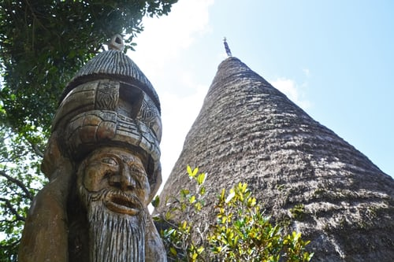

Explore the City and the Island
Taniti City
Taniti City boasts native architecture and nearby white, sandy beaches that encircle Yellow Leaf Bay. There is also a variety of local entertainment. Many of these activities are located in Merriton Landing, which is a rapidly developing area on the north side of Yellow Leaf Bay.
- Local History Museum and
Art Galleries - Movie Theater
- Arcade and Bowling
- Dance Club
The Island
Popular activities include boat or bus tours of the island, hikes in the rainforest, or visits to Taniti’s active volcano.